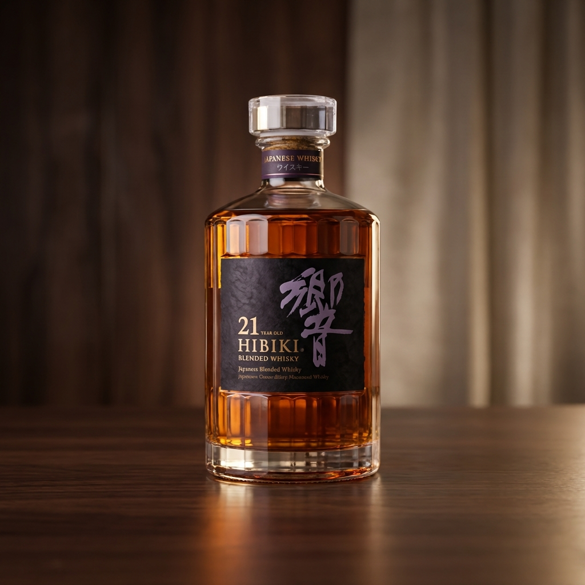

To Our Luxembourg Readers
Finding a bottle of Hibiki 21 in Europe is like finding a hidden gem. It is not just whisky; it is the pinnacle of Japanese blending craftsmanship. For those who appreciate the complexity of a fine Bordeaux, this amber nectar offers an equally sophisticated journey through the seasons of Japan.
Hibiki 21: The Art of Time

Winner of the World's Best Blended Whisky award multiple times. A harmonious blend of rare malt and grain whiskies aged for over 21 years.
🇯🇵 Keyword: Kanzen (完全)
'Kanzen' means perfection or completeness. Hibiki, meaning 'Resonance', embodies the Japanese philosophy of wa (harmony). The bottle has 24 facets, representing the 24 seasons of the traditional Japanese lunar calendar, symbolizing time itself.
Tasting Notes
Nose: Cooked fruit, blackberry, ripe banana, caramel. Palate: Sandalwood, honeycomb, dried apricot and Mizunara (Japanese oak). Finish: Long, rich with incense aroma.
📍 Access
Suntory Yamazaki Distillery, Shimamoto, Osaka, Japan
Content Source: Suntory Spirits Press Release
This article is a curated introduction for KAKEHASHI readers. All rights belong to the
original owners.